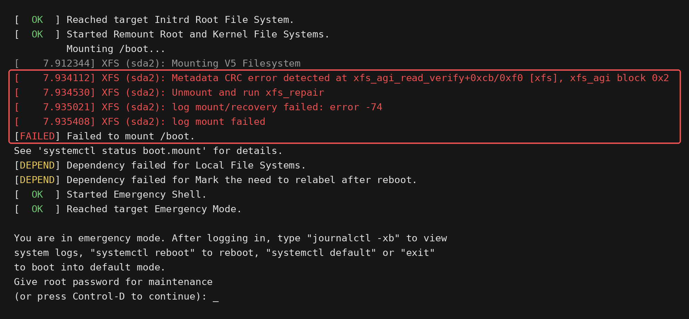
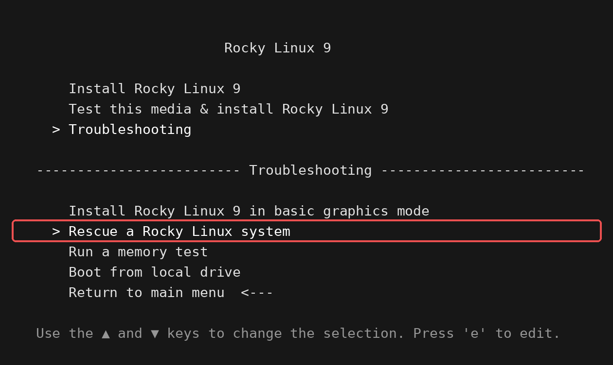
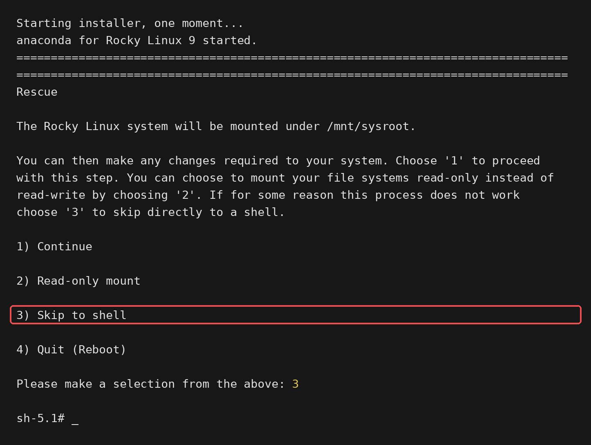
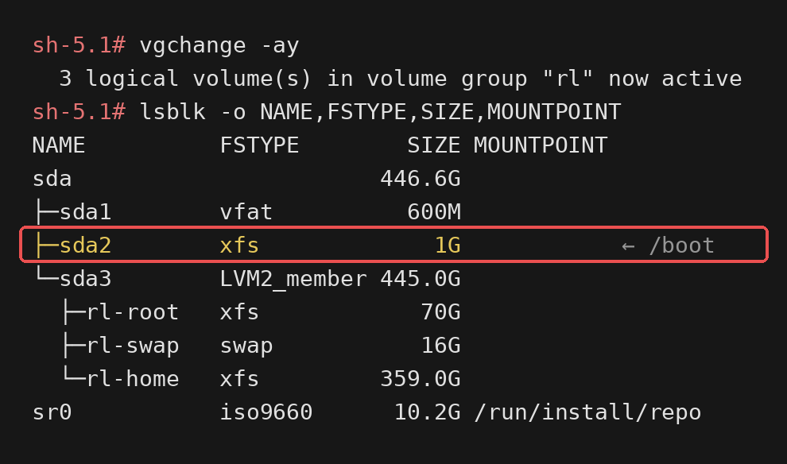
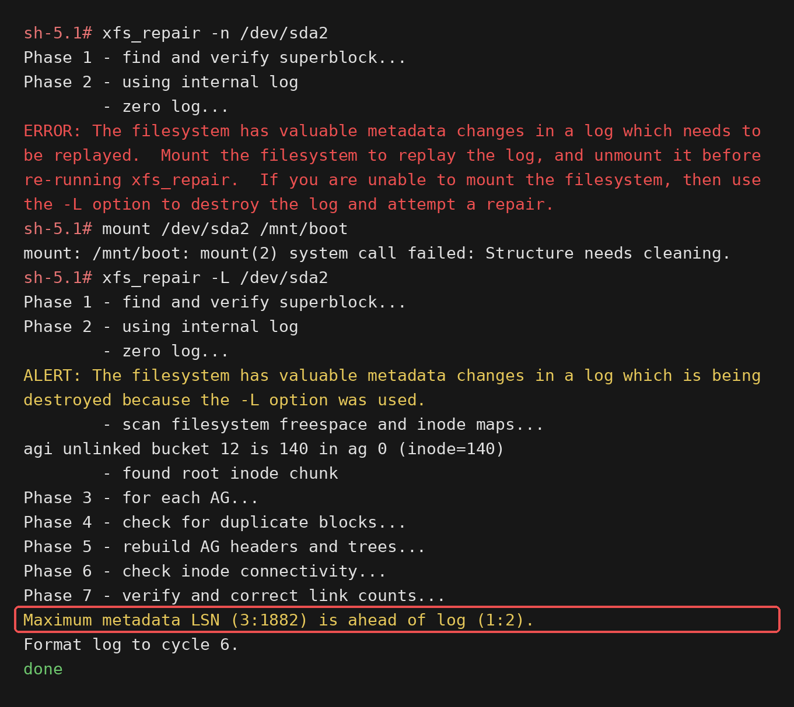
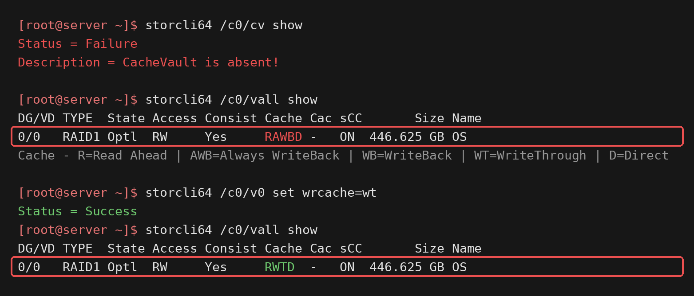

장애 대응
RAID Write Back 캐시로 인한 /boot 손상 긴급 복구
정전도 없이 재부팅만 했는데 Rocky Linux 9 서버가 부팅되지 않았습니다. /boot 파일시스템 손상을 ISO 복구 모드로 살리고, 원인이 된 RAID 컨트롤러 캐시 정책까지 바로잡은 과정입니다.
1. 장애 개요
| 대상 | Rocky Linux 9, 하드웨어 RAID 컨트롤러 |
|---|---|
| 발생 시점 | OS 재부팅 (전원 차단 없음) |
| 증상 | /boot(XFS) 마운트 실패 → 비상 모드(emergency mode)에서 멈춤 |
| 원인 | BBU/CacheVault 보호 없이 Write Back으로 동작한 컨트롤러 캐시 |
| 조치 | ISO 복구 모드 → xfs_repair → 부팅 파일 점검 → 캐시 정책 점검 |
재부팅 → /boot 마운트 실패 → 비상 모드
│
├─ 원격 콘솔(iDRAC·iLO·IPMI)로 Rocky 9 ISO 연결 → Rescue 모드
├─ 손상 파티션 확인 (lsblk)
├─ xfs_repair (점검 → 로그 재생 시도 → -L 강제 복구)
├─ 부팅 파일 점검, 없으면 커널·GRUB·initramfs 재구성
└─ 정상 부팅 확인 → 컨트롤러 캐시 정책 변경 → 재발 방지2. 증상
부팅 중 /boot를 마운트하다 XFS 메타데이터 CRC 오류가 나고, 저널(로그) 복구까지 실패해 비상 모드로 떨어졌습니다. 루트(/)는 정상이라 커널은 올라왔지만, /boot가 필요한 이후 단계로 넘어가지 못했습니다.

비상 모드에서도 xfs_repair를 실행할 수는 있습니다. 하지만 손상 범위를 알 수 없고 커널·GRUB 파일까지 다시 만들어야 할 수도 있어서, 설치 ISO의 복구 환경에서 작업하기로 했습니다.
3. 원인: 왜 재부팅만으로 깨졌나
- Write Back 캐시: 컨트롤러는 디스크에 쓰기 전에 캐시 메모리에 먼저 저장하고 OS에 "완료"를 알립니다. 실제 디스크 기록은 나중에 합니다.
- 보호 장치 부재: 이 캐시는 원래 BBU(배터리)나 CacheVault(플래시)가 보호합니다. 보호 장치가 없거나 고장 난 상태에서 Write Back이 유지되면(특히 Always Write Back 설정) 캐시 데이터가 보호받지 못합니다.
- 재부팅 시 캐시 유실: OS 재부팅 과정에서 PCIe 리셋 신호(PERST#)가 컨트롤러를 초기화하면서, 디스크에 아직 기록되지 않은 캐시 데이터가 사라졌습니다. 정전이 없어도 파일시스템이 손상될 수 있는 이유입니다.
- /boot가 깨지기 쉬운 이유:
/boot는 커널 업데이트 때 쓰기가 몰리는 영역이라, 재부팅 직전 기록이 디스크에 반영되지 않으면 바로 부팅 실패로 이어집니다.
4. 긴급 복구: ISO 복구 모드 진입
- 원격 관리 콘솔(iDRAC·iLO·IPMI)의 가상 미디어로 서버와 같은 메이저 버전의 Rocky Linux 9 ISO를 연결합니다.
- 부팅 순서를 가상 CD로 바꾸고 재부팅합니다.
- 부팅 메뉴에서 Troubleshooting → Rescue a Rocky Linux system을 선택합니다.

복구 환경이 뜨면 3) Skip to shell을 고릅니다. 1)번은 시스템을 /mnt/sysroot에 자동 마운트하는데, /boot가 손상된 상태에서는 마운트에 실패하거나 수리할 파일시스템이 마운트되어 버려 xfs_repair를 실행할 수 없습니다.

5. 손상 파티션 확인
vgchange -ay # LVM 볼륨 활성화
lsblk -o NAME,FSTYPE,SIZE,MOUNTPOINT
blkid /dev/sda2 # /etc/fstab 의 /boot UUID 와 같은지 확인
6. xfs_repair로 /boot 복구
XFS는 쓰기 내용을 저널(로그)에 먼저 기록합니다. 그래서 가능하면 로그를 살려서 복구하고, 안 될 때만 로그를 버리는 순서로 진행합니다.
# ① 점검만 (-n: 아무것도 바꾸지 않음)
xfs_repair -n /dev/sda2
# ② 로그 재생 시도: 마운트가 되면 로그가 반영됨 → 바로 해제 후 일반 복구
mkdir -p /mnt/boot
mount /dev/sda2 /mnt/boot && umount /mnt/boot && xfs_repair /dev/sda2
# ③ 마운트조차 실패하면: 로그를 버리고 강제 복구 (로그에 있던 최근 변경은 유실 가능)
xfs_repair -L /dev/sda2
-L 강제 복구 완료. 메타데이터가 로그보다 앞서 있다는 메시지가 캐시 유실 정황과 일치 (재현 화면)-L은 로그에 남아 있던 최근 변경을 버립니다. /boot는 커널·initramfs·GRUB 설정처럼 다시 만들 수 있는 파일만 있어서 감수할 수 있었지만, 데이터 파티션이라면 먼저 dd나 스냅샷으로 원본을 떠 두고 진행해야 합니다.7. 부팅 파일 점검
복구 후 시스템을 마운트해 /boot 안의 파일이 온전한지 확인합니다. 손상된 파일은 lost+found로 옮겨지거나 크기가 0이 될 수 있습니다.
# 시스템 마운트 후 chroot
mkdir -p /mnt/sysroot
mount /dev/rl/root /mnt/sysroot
mount /dev/sda2 /mnt/sysroot/boot
mount /dev/sda1 /mnt/sysroot/boot/efi
for d in proc sys dev run; do mount --bind /$d /mnt/sysroot/$d; done
chroot /mnt/sysroot
# 설치된 커널과 /boot 파일이 짝이 맞는지
rpm -q kernel-core
ls -l /boot/vmlinuz-* /boot/initramfs-*
ls /boot/loader/entries/ # 부팅 항목 (BLS)
ls /boot/lost+found/ 2>/dev/null # 복구 중 떨어져 나온 파일모든 커널 버전에 vmlinuz, initramfs, 부팅 항목이 크기 0 없이 있으면 8번은 건너뛰고 재부팅합니다.
8. 파일이 깨졌을 때: 커널·initramfs·GRUB 재구성
일부 파일이 없거나 손상되었다면, chroot 안에서 ISO를 저장소로 써서 오프라인으로 다시 만듭니다.
# (chroot 밖, 복구 셸에서) ISO 를 chroot 안으로 연결
mkdir -p /mnt/sysroot/mnt/iso
mount --bind /run/install/repo /mnt/sysroot/mnt/iso
chroot /mnt/sysroot
# ISO 의 BaseOS 저장소만 사용해 커널 재설치
# → vmlinuz 복사, initramfs 생성, 부팅 항목(BLS) 등록까지 자동 수행
dnf --disablerepo='*' --repofrompath=iso,/mnt/iso/BaseOS --setopt=iso.gpgcheck=0 \
install -y kernel-core kernel-modules
# 네트워크가 되면 설치돼 있던 버전 그대로 재설치
# dnf reinstall -y kernel-core-$(rpm -q --qf '%{VERSION}-%{RELEASE}.%{ARCH}\n' kernel-core | tail -1)
# 기존 커널의 initramfs 재생성
dracut -f --regenerate-all
# GRUB 설정 재생성 (RHEL 9 계열은 BIOS·UEFI 모두 이 경로)
grub2-mkconfig -o /boot/grub2/grub.cfg
# /etc/fstab 의 /boot UUID 확인 (mkfs 로 새로 만들었다면 반드시 수정)
blkid /dev/sda2 ; grep /boot /etc/fstab
exitxfs_repair로도 살릴 수 없을 만큼 손상되었다면, mkfs.xfs -f /dev/sda2로 새로 만든 뒤 위 절차로 채웁니다. 이때 UUID가 바뀌므로 /etc/fstab 수정이 필수입니다.
9. 정상화 확인
# 가상 미디어 분리 후 재부팅
umount -R /mnt/sysroot
reboot
# 부팅 후
findmnt /boot # /boot 정상 마운트
journalctl -b -p err # 이번 부팅 오류 확인
xfs_info /boot # 파일시스템 정보
grubby --default-kernel # 기본 부팅 커널10. 재발 방지: 컨트롤러 캐시 정책
보호 장치가 없거나 고장 난 컨트롤러는 Write Through로 바꿉니다. 아래는 Broadcom(LSI) 계열 storcli 기준 예시입니다. Write Through는 디스크에 실제로 쓴 뒤에 완료를 알리므로 쓰기 성능은 떨어지지만, 캐시 유실로 데이터가 깨지지는 않습니다.

# 캐시 보호 장치 상태
storcli64 /c0/cv show # CacheVault (플래시)
storcli64 /c0/bbu show # BBU (배터리)
# 가상 디스크 캐시 정책
storcli64 /c0/vall show
# 보호 장치가 없거나 고장 → Write Through
storcli64 /c0/v0 set wrcache=wt
# 보호 장치가 정상일 때만 Write Back (고장 나면 자동으로 WT 전환)
# storcli64 /c0/v0 set wrcache=wb ← AWB(Always Write Back)는 쓰지 않음| 정책 | 동작 | 권장 |
|---|---|---|
| WT (Write Through) | 디스크 기록 후 완료 응답 | 보호 장치가 없을 때 |
| WB (Write Back) | 캐시 저장 후 완료 응답, 보호 장치 고장 시 자동 WT 전환 | BBU/CacheVault 정상일 때 |
| AWB (Always Write Back) | 보호 장치가 없어도 계속 Write Back | 사용 금지 |
Dell PERC는 perccli로 같은 명령을 쓰고, iDRAC 웹 화면의 가상 디스크 설정에서도 바꿀 수 있습니다.
11. 재발 방지 운영 절차
- 서버 점검 항목: 컨트롤러 캐시 정책과 BBU/CacheVault 상태를 정기 점검과 신규 서버 인수 점검에 포함합니다.
- /boot 백업: 커널 업데이트 직후
/boot를 압축 보관하면, 다음에는 재구성 없이 바로 복원할 수 있습니다.tar -czpf /backup/boot-$(hostname -s)-$(date +%F).tar.gz -C / boot - 복구 ISO 준비: 서버와 같은 메이저 버전의 ISO를 원격 콘솔에서 바로 연결할 수 있는 위치에 둡니다.
- 재부팅 전 확인: 계획된 재부팅 전에
sync를 실행하고, 캐시 정책이 WB/AWB인 서버는 보호 장치 상태부터 확인합니다.